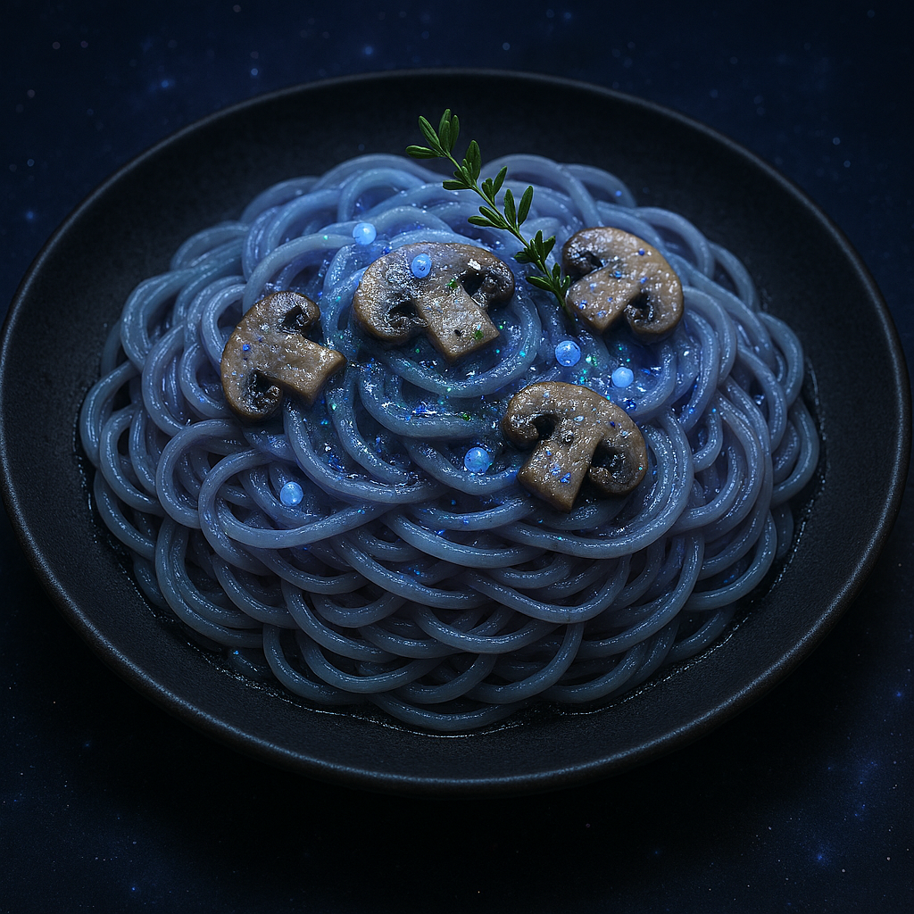

Moon Light Mushroom Pasta Recipe

Description:
An authentic tasty pasta recipe that is other worldly and mystical.
Ingredients:
- 1 bundle of twilight noodles (glow-in-the-dark linguine made from lunar wheat)
- 2 tbsp starlight oil (cold-pressed from nebula olives)
- 1 cup mooncap mushrooms (silver-flecked fungi harvested at midnight)
- 1/2 tsp crushed comet dust (adds a zingy citrus sparkle)
- 1/4 cup cream of cloud (ethereal dairy whipped from sky cows)
- Pinch of salt from the Sea of Tranquility
- Garnish: edible galaxy pearls and a sprig of dream thyme
Instructions
- Boil twilight noodles in enchanted spring water until they shimmer with a soft glow.
- In a pan, heat starlight oil and sauté mooncap mushrooms until they release their cosmic aroma.
- Stir in comet dust and cream of cloud, simmering until the sauce thickens into a silky nebula.
- Toss noodles in the sauce and season with lunar salt.
- Plate with galaxy pearls and dream thyme for a celestial finish.